Isalo
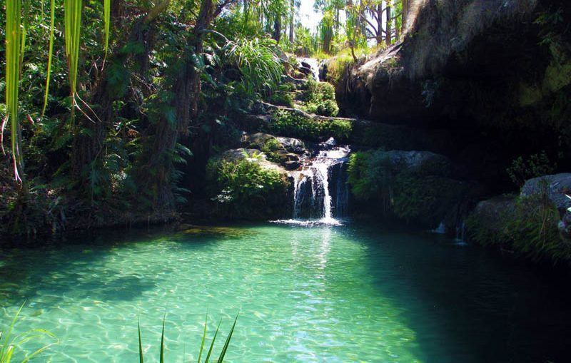
Le Parc National d'Isalo
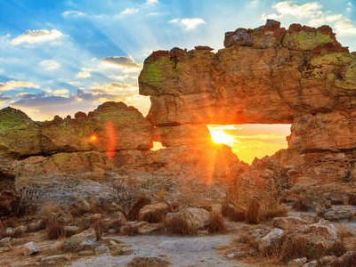
La fenêtre de l'Isalo

La Reine d'Isalo
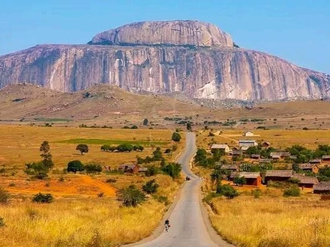
Le Bonnet de l'Evêque
Tuléar
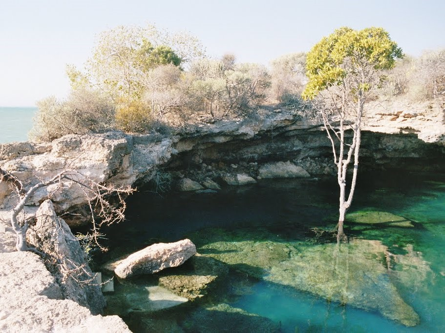
Grotte de Sarodrano
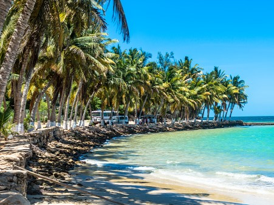
PLage Madiorano
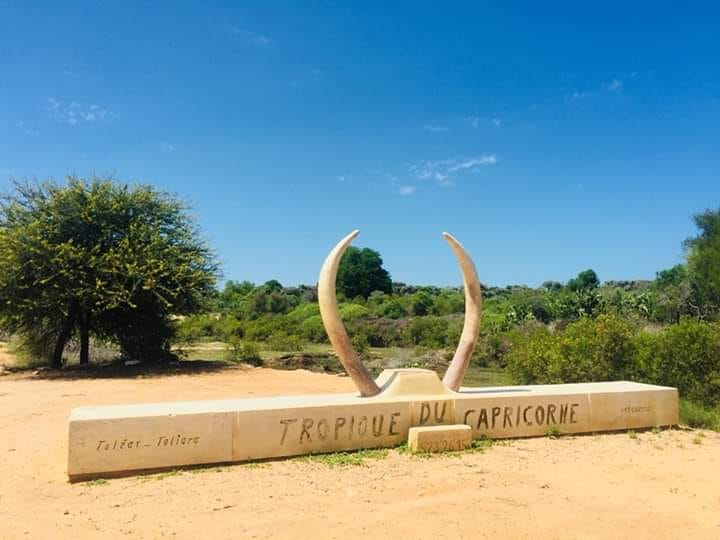
Tropique du Capricorne
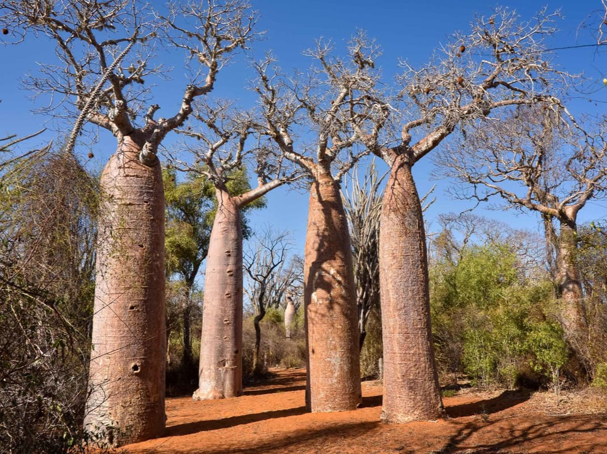
Réserve de Reniala
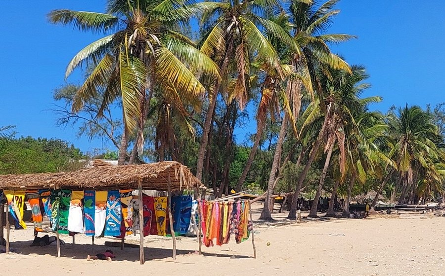
PLage de Mangily
Anakao
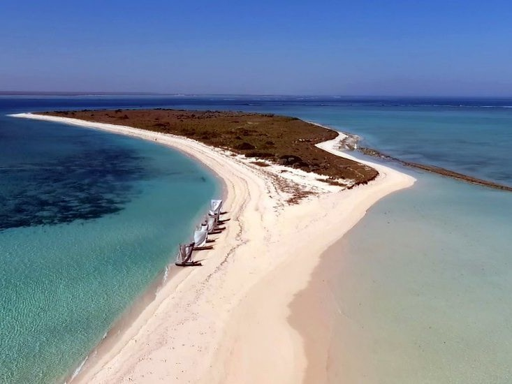
Nosy Ve

Prince Anakao
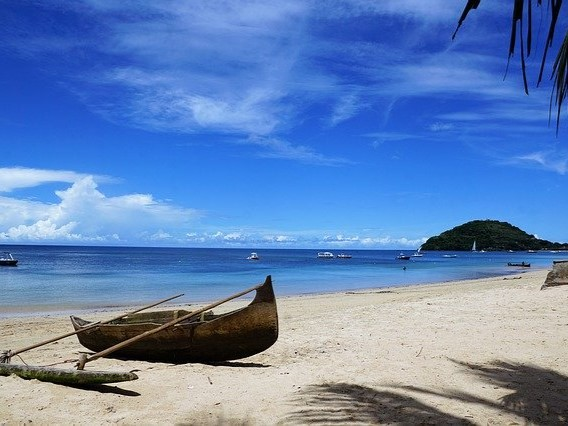
Nosy Satrana
Morondava
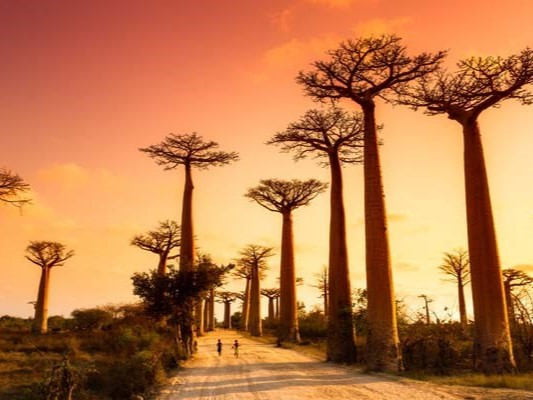
Allée des Baobabs
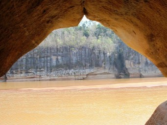
Gorges du Manambolo
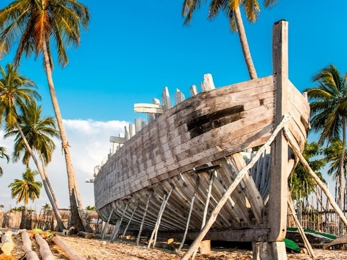
Belo sur Mer